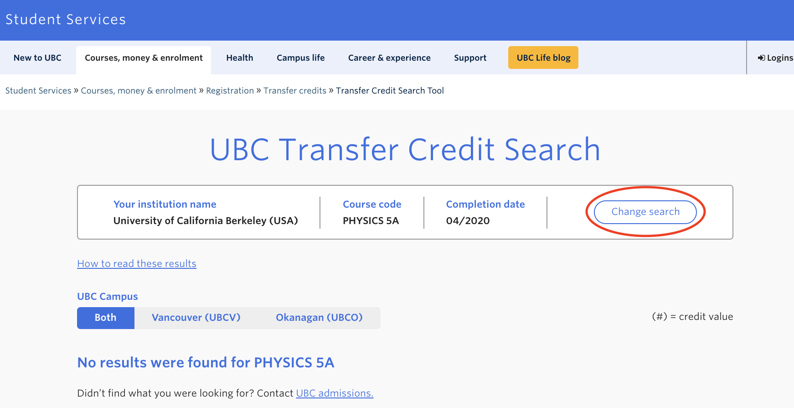

UX Lab @ UBC Student Communication Services
How might we test if UBC's websites are accessible and align with student needs?

Project details
Team: UX/UI Designer - Andy Chipperfield, UX Lab Coordinator - Ariel Lee, UX Researchers - Tiffany Wu, Carley Low, Wynonna Moo, Jessica del Rosario
Role: UX Researcher
Deliverables: User research, Usability testing, Data collection, Case study, Research Presentation
Timeline: 8 weeks (2 projects)
Background
The newly launched Transfer Credit Search Tool and 'What can I do with my Science degree?’ page on UBC’s website were created to assist advisors, incoming transfer students, and UBC Science students with course and career planning. Prior to Transfer Credit Search tool launch, three phases of usability testing were performed on the prototypes, allowing for reiteration in its development.
Project presentations (PDF):
Project goal
The purpose of the study is to understand how students and stakeholders are navigating the Transfer Credit Search Tool, as well as the 'What Can I Do With My Science Degree?' (WCIDWMSD) Page. The rest of this page will be focusing on Transfer Credit Search Tool Project.


Test flow
To evaluate the performance of the newly launched search tool, the UBC UX Lab ran usability testing with incoming UBC transfer students and both UBC and non-UBC academic other stakeholders such as advisors.

The main usability study consisted of:
- Pre-screen Questionnaire: this allowed us to better understand the background of each user, such as what school they were transferring from, and what they were studying.
- Scenario Task: this allowed us to define if there were any specific pain points in the user flow, or if the user felt that certain functions were not as intuitive.
- Follow-up Questions: this allowed us to further question why the user may have experienced certain issues, and investigate the root cause of the specific pain points that arose during the scenario task.
Participant demographics

As multiple pre-launch testings had already been conducted, we tested a smaller sample of 7 participants (4 advisors, 3 students).
Key findings
Search Field
- Inputting course code without a space resulted in an error message: This finding told us that many students/advisors who searched for a course did not include a space between the word and the number of the code, resulting in an error. This told us that it may be more intuitive to allow course codes to be searched with or without a space.

Search Results
- ‘No Results Found’ error message was confusing: Users were unsure whether this meant the course will not transfer at all was still awaiting evaluation. This told us that users were confused by the vagueness of the error messages, and felt as if further clarification was needed.
- Course code inconsistencies in UBC database: The tool showed the course would not transfer when user indicated was supposed to, or the course code was not the same between UBC and other school databases. This finding allowed us to conclude that there were certain inaccuracies within the UBC database, creating mistrust in the users. Based on these findings, we simply reported to the correct department to ensure all course codes and transferrable courses were accurately inputted into the tool.
- 'Change Search' button: This button was meant to be an easy way for users to return to the search page without having to re-input general information such as institution name - users found the button difficult to find or expected it to be somewhere else. This informed us that we should either make the button more visually obvious, or place it in a more intuitive position on the page.



Limitations
- Limited to 7 participants
- Tool had already undergone 3 phases of pre-launch usability testing.
- Limited to Science students
- All 3 student participants were transferring into the Faculty of Science.
- May be helpful to run usability test with students from other faculties to have more representative data.
Future direction
- Make ‘Change Search’ button more obvious or place button in more identifiable location.
- Specify error message to the error being made to reduce confusion for users.
- Improve reliability - check for data accuracy.
- Increase exposure - improve SEO.